Proto-Persona (Before Any Research)
The assumption-based starting point, written before talking to anyone:
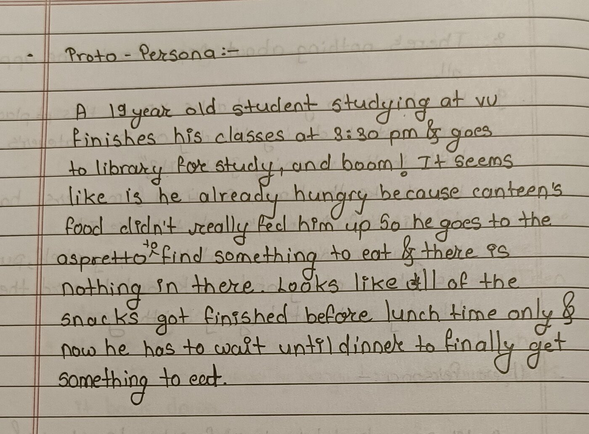
STET301 · Human-Computer Interaction (UI/UX) · Mid-term Examination — Empathy to Execution Flow
Aspretto is the only quick, non-coffee snack counter on campus — and the campus itself is remote enough that there are only 2–3 known food options within reach at all, off-campus included. Every hosteler already knows what those are. Hostelers rely on Aspretto to bridge the gap between lunch and dinner, especially since class end times shift day to day and there's rarely time to plan a proper meal in between.
The problem: they show up and, more often than not, find the shelf picked over, the counter unstaffed, or both — with no way to know any of that before making the walk. A survey of 12 hostelers backs this up: 11 of 12 experience it, most at least weekly, and by far the most common response is to just skip the snack and wait until dinner.
The assumption-based starting point, written before talking to anyone:

A 12-question survey went to hostelers first (12 responses, ~5 minutes average completion time). The headline numbers:
Three respondents answered "No" to the very first screener question, then went on to describe a specific Aspretto letdown in their own open-text answers later in the same survey — flagged here rather than quietly smoothed over, since self-report data is always going to have some noise like this.
The open-text answers added texture the multiple-choice couldn't. Two respondents specifically named walking to Manish instead — "found peace, but getting there is a hassle," as one put it — which says people already know their alternative; the gap isn't discovery, it's convenience. A few others used their one wish for something else entirely ("bring in the snacks that we demand," "start a retail counter… at affordable price"), a reminder that not every complaint here is a visibility problem. This project fixes the not-knowing, not the not-having.
OTHER THAN THIS SURVEY, I ALSO OBSRVRED PEOPLE AT ASPRETTO BEFORE MAKING USER PERSONA
To get past self-report, one regular hosteler — called Maynerd for this case study — was shadowed at Aspretto in person and logged in real time, present tense, over the seven minutes it took to play out (3:27–3:34 PM):
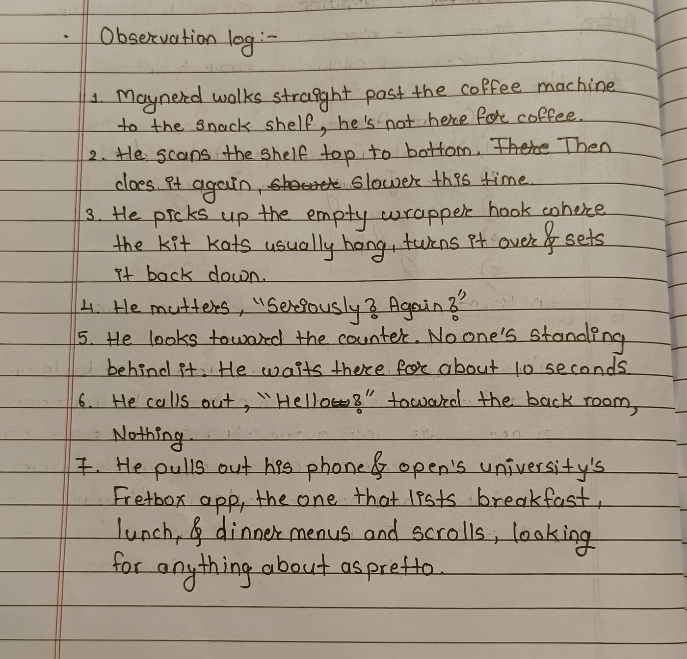
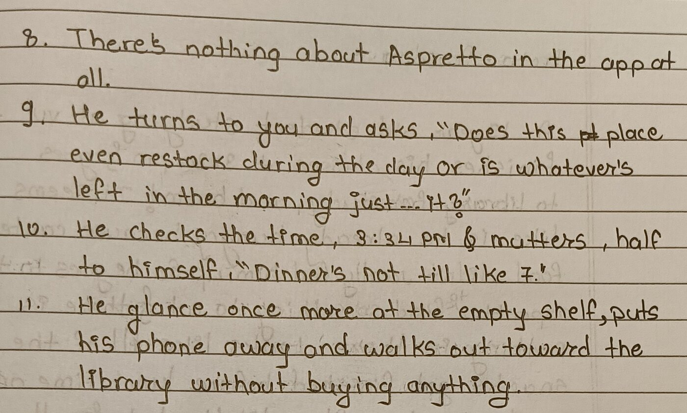
Research turned the proto-persona into someone real enough to nickname — Hangry Maynerd, a 19-year-old hosteler at VU:
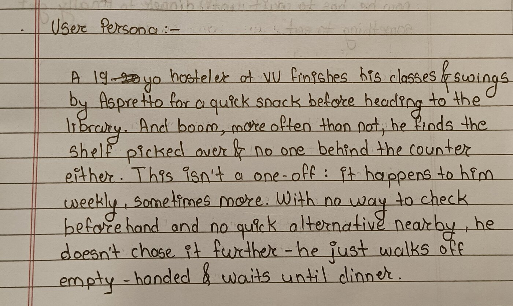
Built directly from the observation log:
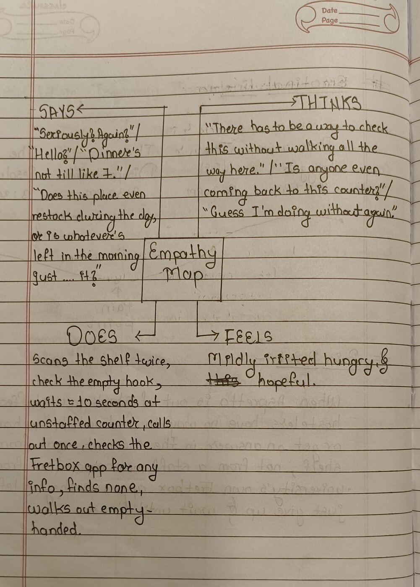
The gap that matters is between Does and Feels: he's still going through the motions — scanning twice, waiting, calling out, opening the app — well after Thinks shows he's already expecting nothing to come of it. The actions outlast the hope.
One specific visit, mapped across four stages:
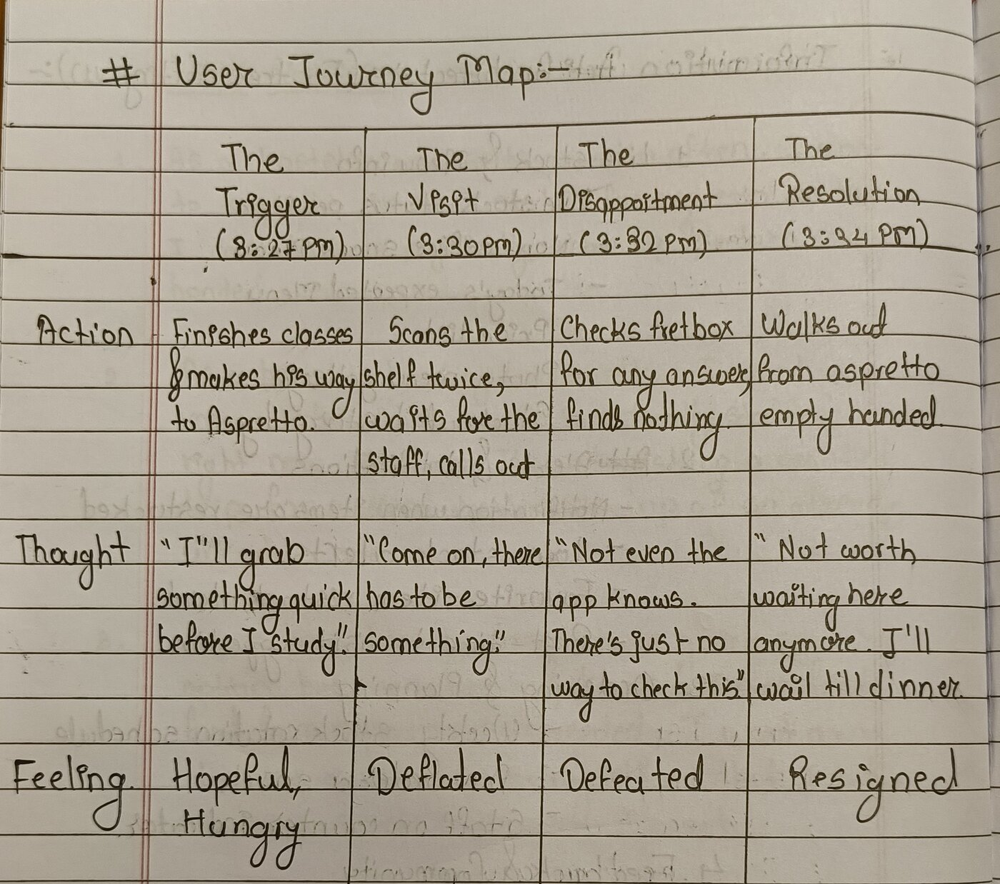
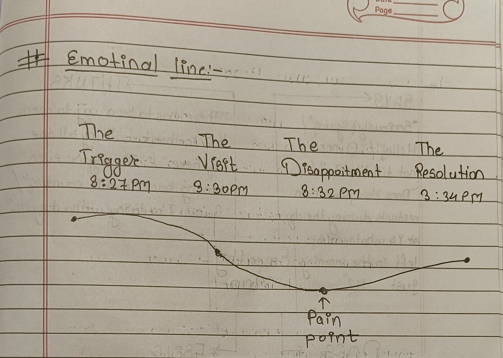
| The Trigger 3:27 PM |
The Visit 3:30 PM |
The Disappointment 3:32 PM |
The Resolution 3:34 PM |
|
|---|---|---|---|---|
| Action | Finishes classes, makes his way to Aspretto | Scans the shelf twice, waits for staff, calls out | Checks Fretbox for any answer, finds nothing | Walks out from Aspretto empty-handed |
| Thought | "I'll grab something quick before I study." | "Come on, there has to be something." | "Not even the app knows. There's just no way to check this." | "Not worth waiting here anymore. I'll wait till dinner." |
| Feeling | Hopeful, hungry | Deflated | Defeated | Resigned |
The emotion line bottoms out at The Disappointment (3:32 PM) — not The Visit, when the shelf first turns out empty. The empty shelf is almost expected by now; it's happened before. What actually breaks him is that the Fretbox app, his one backup plan, also comes up with nothing. That's the moment "I'll figure something out" turns into "there's just no way to check this."
"When Aspretto is out of stock or unstaffed, hostelers have no way to find out beforehand or get an answer in the moment — not from the shelf, not from a staff member, and not from the university's own Fretbox app — so they're left to just give up and wait until dinner."
Each user story was broken into the specific pieces of information or functionality it implied, then expanded with adjacent ideas — anything that could plausibly solve some version of this pain point went on the list, unfiltered. That produced 18 candidate features:
All 18 items went into a hybrid card sort — five preset category labels (Live Stock & Menu Info, Alerts & Notifications, Ordering & Planning, Feedback & Community, Alternatives Off-Campus), plus a "Not Sure / Other" catch-all for anything that didn't fit. Microsoft Forms has no native card-sort tool, so it was run as a Likert-style grid: one row per feature, one column per category, and respondents marked which column each item belonged in. 12 people completed it, averaging 3:48 on the form; 1 was excluded for straight-lining — marking the same category for all 18 items — leaving 11 valid responses.
Most items sorted cleanly. Seven of the eighteen landed in one category with 70%+ agreement — Pre-order a snack, Favorite-item restock alert, and Item ratings & reviews each pulled 9 of 11 votes into a single column. Across all 18 items, only 11 of 198 total votes (about 6%) landed in "Not Sure / Other" — and most of those sat on the same few items that split every other way too. That's why the catch-all got dropped from V1 rather than kept as a real menu section.
A handful of items never found a real home, though, and that turned out to matter:
| Item | Vote split | Shipped to V1 as |
|---|---|---|
| Staff-on-counter indicator | Alerts 3, Ordering 3, Feedback 2, Not Sure 2, Live Stock 1 | Ordering & Planning |
| Today's expected menu | Live Stock 5, Alerts 5, Alternatives 1 | Live Stock & Menu Info |
| Photo menu gallery | Live Stock 4, Not Sure 3, Feedback 2, Alerts 1, Ordering 1 | Live Stock & Menu Info |
| Stockout history log | Live Stock 4, Alerts 2, Feedback 2, Not Sure 2, Ordering 1 | Live Stock & Menu Info |
Staff-on-counter indicator is the one that mattered most: it never had a majority anywhere, split almost evenly between Alerts and Ordering & Planning with real votes even for Feedback and Not Sure. V1 shipped it to Ordering & Planning as the closest thing to a plurality — but the ambiguity was already visible here, well before the tree test made it undeniable (see Pivot 1, below).
18 items, sorted by 11 respondents into five categories. This structure went straight into the tree test:
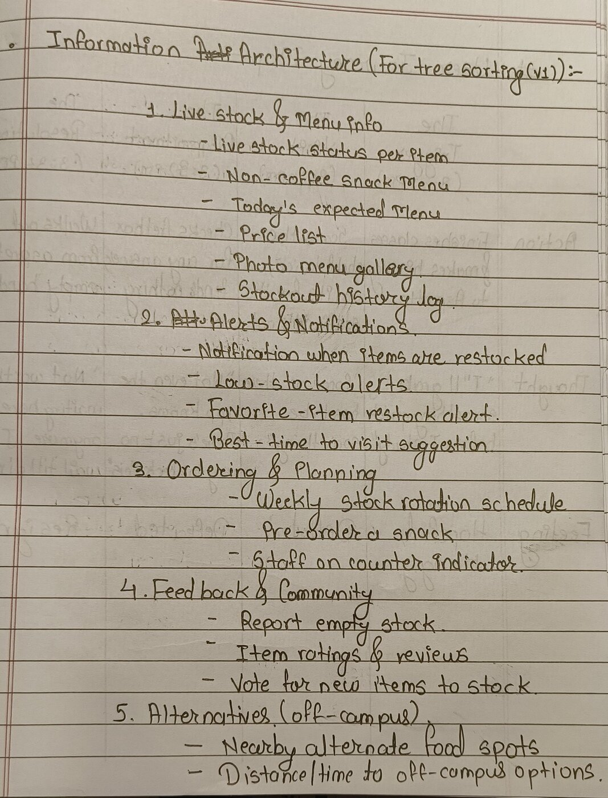
Tested with a small self-built HTML/JS tool tracking click path, time on task, and CSV export — no paid tool needed. 10 scenarios were written, each worded as a natural task ("You want to check if your usual snack is back in stock" rather than the literal menu label), so the test measured navigation, not vocabulary-matching. 6 people completed all 10 tasks — one more than the 5-person minimum.
| Task(s) | Item being tested | First-click accuracy | Task success | What we found |
|---|---|---|---|---|
| Tasks 1–3 | Items inside Live Stock & Menu Info | 67–83% | — | Category was easy to find; people mixed up similar items once they were inside it |
| Task 5 | Staff-on-counter indicator | 33% | 33% | Worst-performing task. 3 of 4 wrong answers landed on "Best-time-to-visit suggestion" |
| Task 6 | Favorite-item restock alert | — | 17% | Worst success rate overall. 4 of 5 who reached the right category still picked "Notification when a sold-out item is restocked" instead |
| Task 9 | Nearby alternate food spots | — | 83% | Best-performing task in the whole test |
| All 10 tasks | — | 35/60 (58%) | 28/60 (47%) | Overall result |
Pivot 1 — "Staff-on-counter indicator" moved from Ordering & Planning into Live Stock & Menu Info, and renamed "Counter staffed right now?"
This item never had a clean home. It was the most-split item in the entire card sort — 3 votes Alerts, 3 Ordering & Planning, 2 Feedback, 2 Not Sure — so V1 shipped it to Ordering & Planning as the closest thing to a plurality, knowing it was a guess. The tree test made the cost of that guess concrete: Task 5 was the worst-performing task in the whole test — 33% first-click, 33% success — and the wrong guesses weren't random: 3 of the 4 landed on "Best-time-to-visit suggestion." That's a planning-flavored answer, but "is the counter staffed right this second" isn't a planning question — it's a right-now status question, the same kind of question as "is this item in stock right now." So it moved to sit next to Live stock status per item, where that mental model already lives.
Pivot 2 — "Favorite-item restock alert" and "Notification when a sold-out item is restocked" merged into one item: "Restock notifications," under Alerts & Notifications.
Task 6 had the worst success rate in the test at 17% — but it wasn't a category problem. 4 of the 5 people who found the right category still picked the wrong item once they were there, because the two options were saying almost the same thing in different words. Renaming either one wouldn't have fixed that; merging them removed the duplicate choice entirely.
The result: 17 items, 5 categories, with both pivots marked directly on the tree.
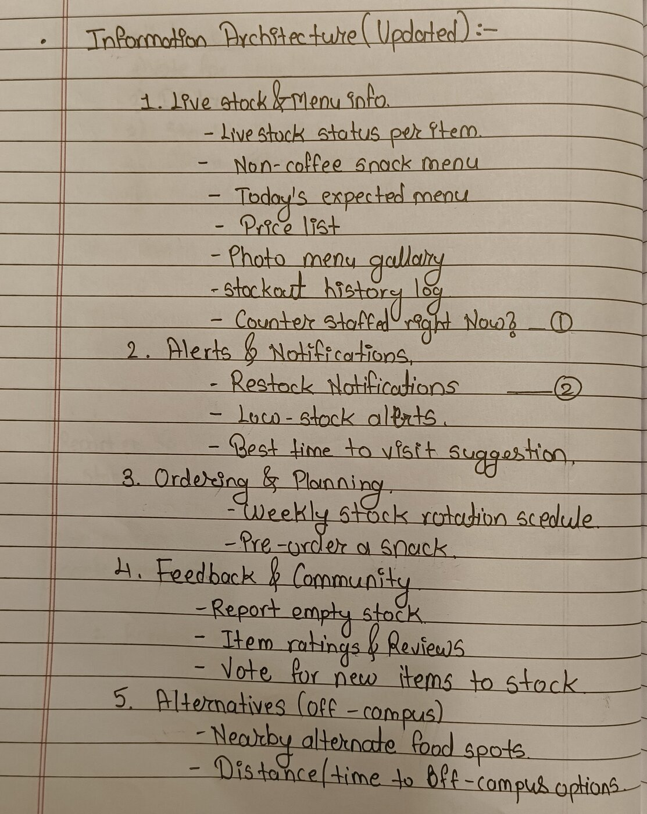
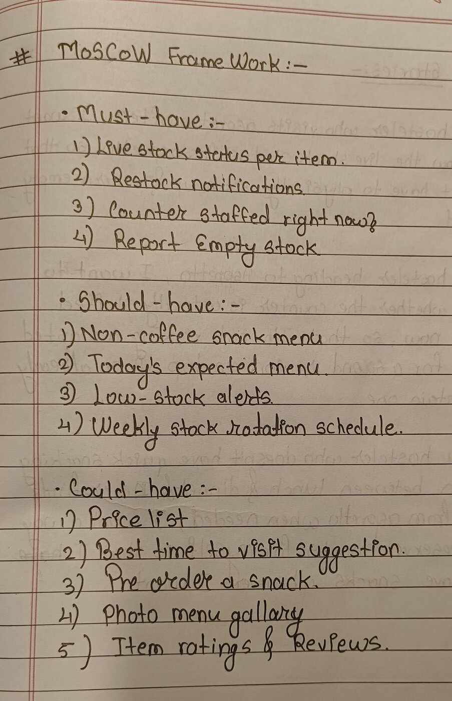
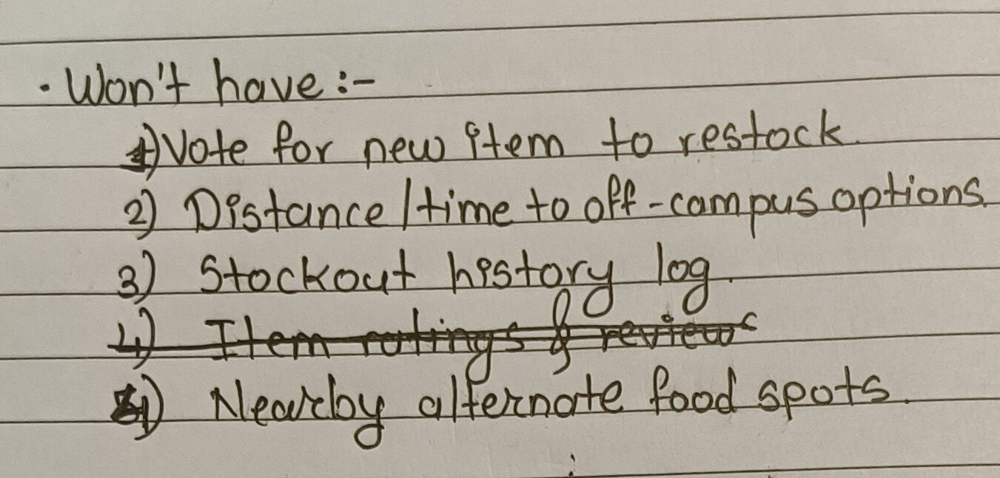
| Must-Have | Should-Have | Could-Have | Won't-Have |
|---|---|---|---|
|
|
|
|
There's no POS integration behind any of this, and no staff reliably behind the counter to update anything — so "Live stock status per item," Must-Have #1, has no data source unless someone puts one there. "Report empty stock" is that data source. It's the only feature on this list whose entire job is making another Must-Have actually work.
This was the best-performing task in the entire tree test (83% success), and it still landed in Won't-Have. The campus is remote enough that there are only 2–3 known off-campus food options, and every hosteler already knows what they are — the survey backs this up directly: two respondents independently named the same off-campus spot, Manish, in their open-text answers, one describing it as "found peace, but getting there is a hassle." That's not a discovery problem a feature can fix; it's a convenience trade-off people are already making on their own. There's no real information gap to close here — nobody's failing to get food because they don't know where the off-campus options are; they're failing because they don't know if Aspretto has anything right now. Usability isn't the same question as whether a feature is worth building.
The hardest-debated pair for that fourth Must-Have slot: Report empty stock vs. Non-coffee snack menu.
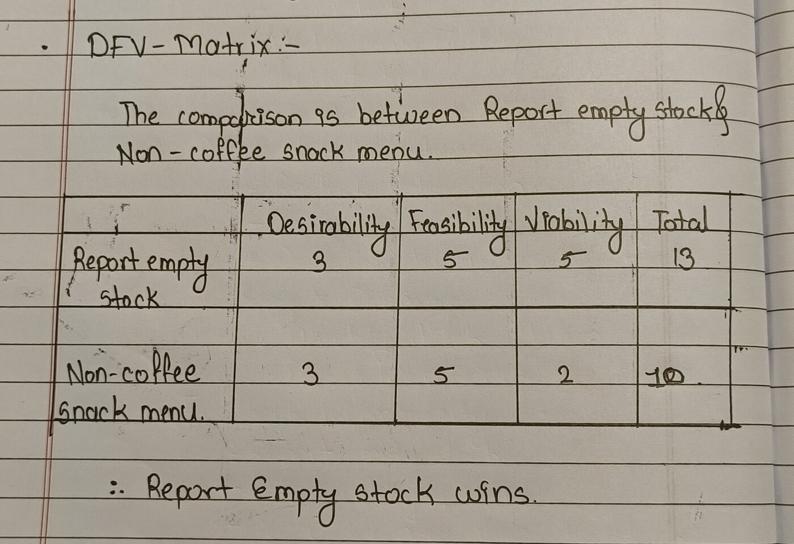
| Desirability | Feasibility | Viability | Total | |
|---|---|---|---|---|
| Report empty stock | 3 | 5 | 5 | 13 |
| Non-coffee snack menu | 3 | 5 | 2 | 10 |
Report empty stock wins on Viability, not on Desirability or Feasibility — both features tied on those. Non-coffee snack menu scores low on Viability because the tree test already proved the problem: tasks 1–3 showed people can't reliably tell "Non-coffee snack menu" and "Live stock status per item" apart once they're sitting in the same category. Shipping both would mean shipping the confusion. Report empty stock scores high on Viability because it doesn't compete with anything else on the list — it's the one feature whose entire reason to exist is making Live stock status per item possible in the first place.